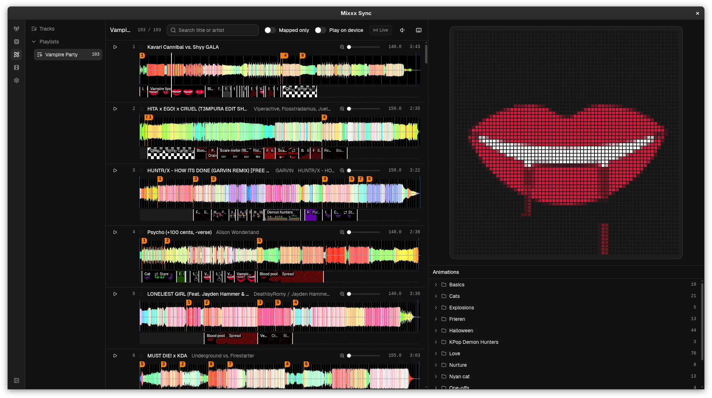
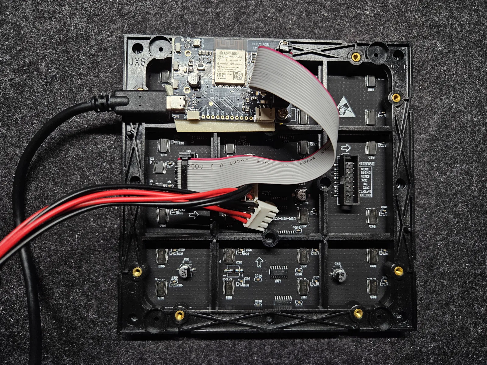

Technical details
TL;DR:
- Display: Adafruit 64x64 RGB LED Matrix
- Driver: Adafruit Matrix Portal S3
- Custom vibecoded software to render synced visuals on the performance laptop and send them to the display.
In slightly more detail:
I performed this set using a custom fork of Mixxx, which is open-source DJ software similar to Serato or Rekordbox. My fork has a number of new features that I used throughout the set, but most importantly for the live visuals, I added support for writing live updates about the currently playing tracks, volumes, and BPMs to a Unix socket on the filesystem.
Visuals are defined in a timeline for each track in the playlist. For example, I might define that a particular visual should play for track A's beats 32-64, then a different visual for that track's beats 65-128, etc. A daemon runs alongside Mixxx on the laptop, reading Mixxx's Unix socket, figuring out which song is "active" (the louder one, if two are playing) and matching it to the predefined timeline of visuals for that song.
Each visual is defined fully in code, with support for displaying videos, SVGs, or rendering the visual entirely on-demand by writing arbitrary frame data to an HTML canvas. Many animations leverage purpose-built 3D renderers or simulations designed specifically for the visual (for example, the one-off Contra-inspired game scenes actually run a full simulation of a simple platformer game with pre-programmed inputs). Defining animations in code like this allows them to trivially take the track's BPM as input and render at the appropriate speed.
I built an editor from scratch to design the animations and visual timeline for the show. It reads Mixxx's database directly, allowing the user to see their Mixxx playlists, hotcues, and the beat grid for each song.

Things get a little bit more interesting when it comes time to send frames to the display:
- The ESP32 on the Matrix Portal S3 has extremely poor wireless performance for real-time applications, necessitating that frames are sent over a wired connection instead.
- Unfortunately, the only wired connection easily available from the S3 is USB serial, which caps out at ~250 KB/s.
- This is notably not enough to send 64x64 uncompressed frames at 30fps (which would take ~360 KB/s for 24-bit color). I initially attempted to optimize this with a simple run-length encoding, but ultimately had to switch to deflate in order to achieve 30fps on busier scenes. Luckily, the ESP32 has hardware support for this compression format, so decompressing frames on the board only takes a few milliseconds per frame (actually faster than the original C++ RLE implementation).
- The full pipeline for rendering each frame, compressing it, sending it to the board, decoding it, and then eventually displaying it adds noticeable latency, especially after adding a small frame buffer on the display driver to smooth over any hiccups. Sadly, human brains are extremely good at noticing when audio is slightly out of sync with a visual, so we have to add some kind of latency compensation.
- To solve this, each frame is assigned a sequence number, and the board reports back to the host which frame number it is currently displaying. This allows the host to calculate how far behind the board is, and "render ahead" future frames so that they get displayed exactly on time with the beat.

After getting the board firmware, local daemon, and editor all working together end-to-end, this setup worked quite well to design simple visuals for my short set.
In the age of AI-driven development, the importance of open-source software like Mixxx has become clearer to me than ever. Had I been using Serato or Rekordbox to perform, building a custom stack like this for visuals would simply not have been possible without exceptional reverse-engineering effort or official support from the companies developing the software. And I would not want to hold my breath waiting for a company like Serato to add support for writing deck state to a Unix socket (no offense intended—it's just not something that anyone except me wants!).
I enjoy projects like this because they're a reminder that even though AI has already proven to be an incredibly destabilizing force, it can also empower us to create things that we previously would only have dreamed of. Start to finish, the software for this project only took about 3 days, and given my unfamiliarity with this domain I doubt I would have been able to complete it unassisted even over the course of 3 months.
Let's dream together of a world where we can create anything we can imagine, or customize anything that already exists to behave exactly the way we want it to, effortlessly. With some luck, that will be the real legacy of all of the advancements in AI over the last few years. But I suppose only time will tell.
Here's hoping,
Stephan